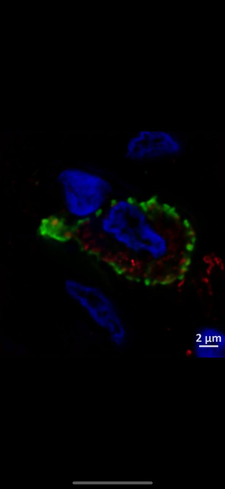
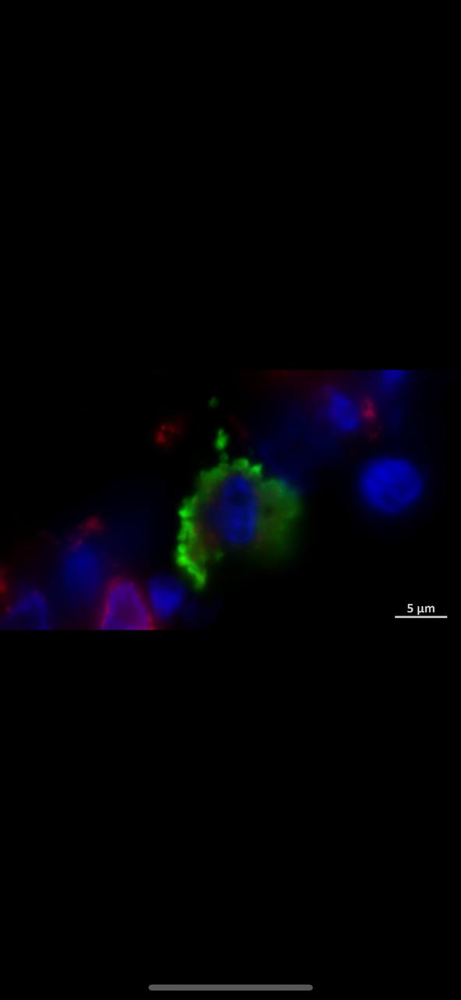
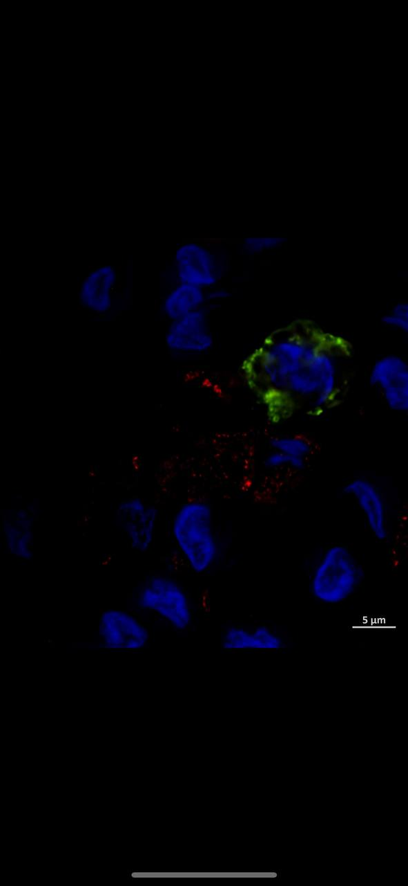

Комплексная диагностическая система для раннего выявления пациентов с высоким риском развития амилоидоза на основе иммунофенотипирования клеток
Амилоидоз — тяжёлое системное заболевание, при котором в органах и тканях происходит патологическое отложение нерастворимых белковых агрегатов — амилоидных фибрилл. Без ранней диагностики болезнь прогрессирует до необратимого поражения почек, сердца, печени и нервной системы.
Ключевую роль в амилоидогенезе играют макрофаги — при определённых условиях они приобретают особый фенотип, активно синтезируя и «упаковывая» амилоидные предшественники. Идентификация таких клеток открывает возможность диагностики за годы до появления клинических симптомов.
Разработанная нами панель маркеров позволяет с высокой точностью идентифицировать амилоидогенные макрофаги в образцах слизистой оболочки прямой кишки, формируя основу для своевременного превентивного вмешательства.
Хроническое воспаление активирует макрофаги особым образом, запуская каскад реакций, ведущих к амилоидогенезу
Сдвиг поляризации макрофагов в сторону M2 фенотипа — критический ранний предиктор развития амилоидоза
Комбинация поверхностных и внутриклеточных маркеров позволяет однозначно выделить амилоидогенный субтип клеток
Ранняя диагностика позволяет начать лечение до необратимых органных повреждений, существенно улучшая прогноз
Каждый маркер несёт независимую диагностическую информацию; их совокупный анализ обеспечивает высокую специфичность метода
Универсальный маркер мononuclear phagocytes. Высокая экспрессия CD68 подтверждает макрофагальную природу исследуемых клеток и служит отправной точкой панельного анализа.
Предшественник белка амилоидных фибрилл типа АА. Накопление SAA1 в макрофагах является ключевым звеном патогенеза реактивного амилоидоза.
Маннозный рецептор тканевых макрофагов, характерный для альтернативно активированного фенотипа. Определяет конкретный субтип амилоидогенных клеток с высокой точностью.
Ключевой противовоспалительный цитокин. Сочетание высокого IL-10 с провоспалительными маркерами указывает на дисрегуляцию иммунного ответа.
Секретируется амилоидогенными макрофагами. Стимулирует отложение амилоида в периваскулярных зонах и является предиктором органного поражения.
Исследование проводится на образцах слизистой оболочки прямой кишки, полученных методом эндоскопической биопсии. Образец фиксируется и подготавливается для последующего иммунофлуоресцентного анализа тканевых макрофагов.
Срезы ткани окрашиваются панелью конъюгированных антител, специфичных к маркерам CD68, SAA1, CD206, IL-10 и TGF-β1. Используются флуорохромы с разными спектрами эмиссии для мультиплексного анализа без спектрального перекрёстного влияния.
Окрашенные срезы исследуются методом многоканальной флуоресцентной микроскопии. Программный анализ изображений определяет долю CD68⁺ клеток с амилоидогенным фенотипом и вычисляет интегральный индекс амилоидогенности макрофагов (ИАМ).
На основе полученных данных алгоритм рассчитывает интегральный индекс риска амилоидоза. Пациенты стратифицируются на три группы: низкий, умеренный и высокий риск — с соответствующими персонализированными клиническими рекомендациями.
Пациентам из группы высокого риска формируется индивидуальный план профилактического мониторинга и ранней фармакологической интервенции для предотвращения прогрессирования амилоидоза.
Многоканальная иммунофлуоресцентная микроскопия образцов слизистой прямой кишки: зелёный канал — поверхностный маркер CD68, красный — внутриклеточные депозиты SAA1, синий — ядра клеток (DAPI)



Выявление амилоидогенных макрофагов на доклинической стадии позволяет начать терапию за 2–3 года до появления первых клинических симптомов амилоидоза, значительно улучшая прогноз пациентов.
Полный цикл диагностики от забора материала до клинического заключения занимает 4–6 часов. Это критически важно при работе с пациентами, требующими срочного принятия лечебных решений.
Комбинированный панельный подход к иммунофенотипированию достоверно превосходит существующие одноцелевые методы диагностики амилоидоза за счёт совокупного анализа независимых маркеров.
Фенотипический профиль макрофагов каждого пациента уникален. Панельный анализ позволяет подобрать таргетную терапию, направленную на конкретные молекулярные мишени пациента.